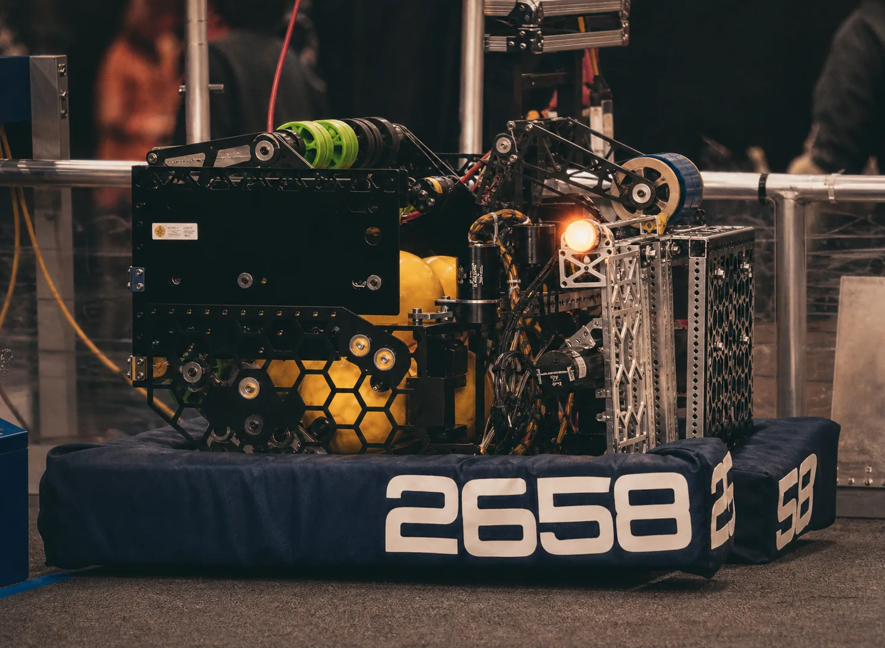
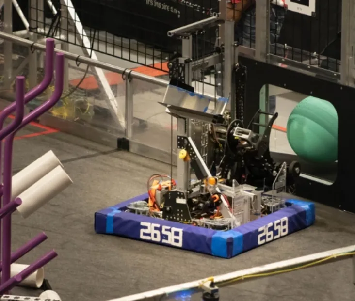
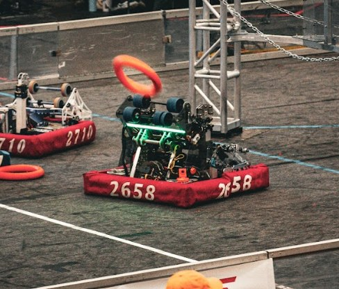
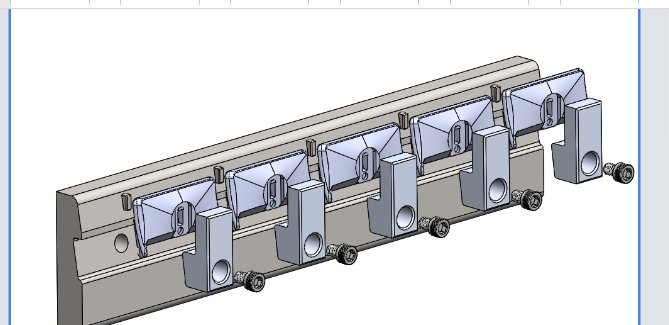
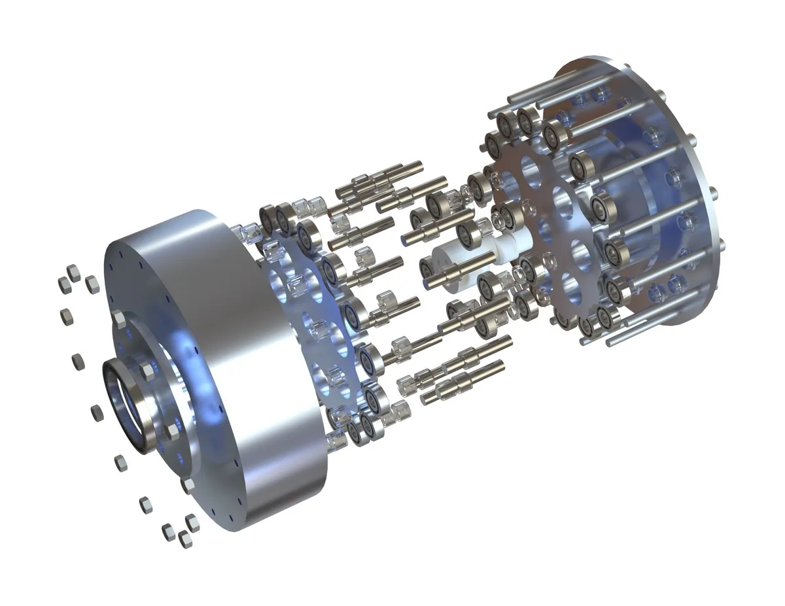
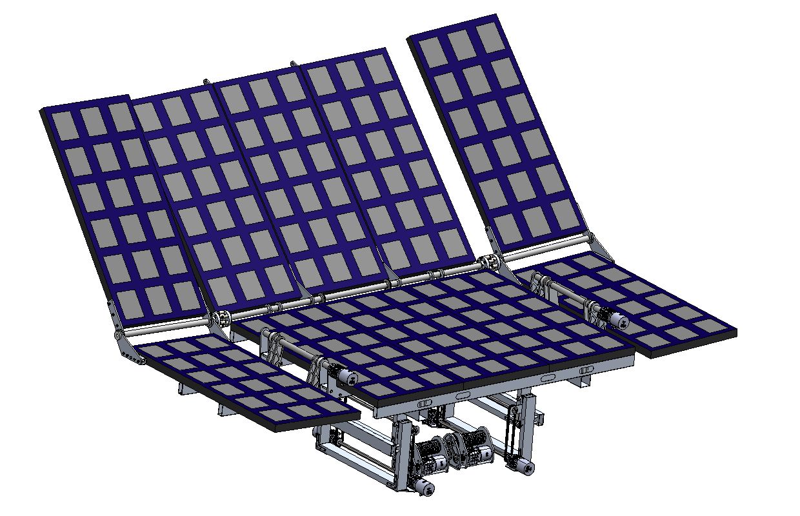
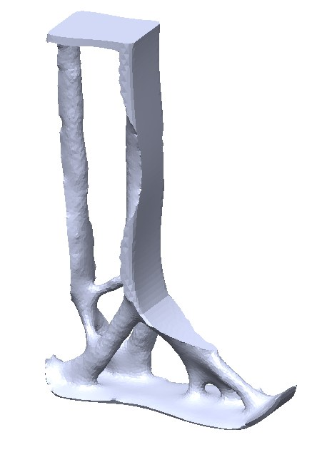
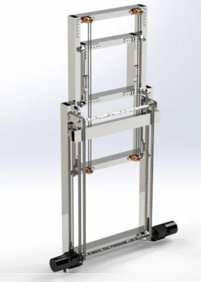
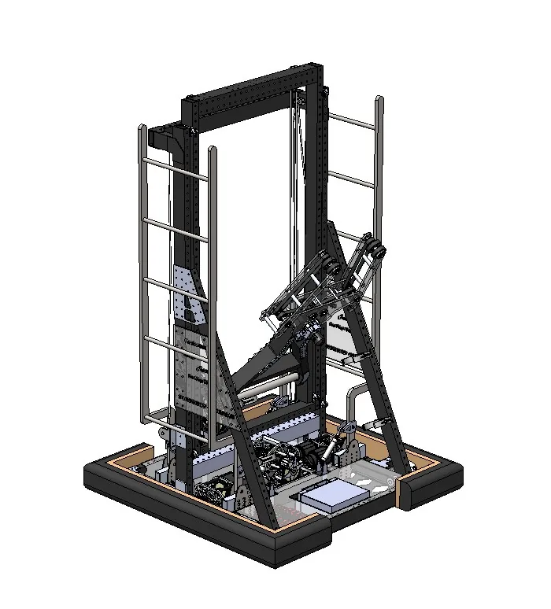

CAD and drawings
SolidWorks, Onshape, Fusion 360, Creo, assemblies, mechanism layouts, manufacturing drawings, GD&T.
FRC robots · CNC fixtures · Industrial fan drawing set
I am a Yale student interested in mechanical design and robotics. I have designed FRC mechanisms, worked on four-axis CNC production, and made fixtures and manufacturing drawings. At Panluminate, I work on automation as a Yale Helix Fellow; I also conduct research at the Grab Lab.

Each of these shows up in a project or experience below, from CAD and analysis through manufacturing and testing.
SolidWorks, Onshape, Fusion 360, Creo, assemblies, mechanism layouts, manufacturing drawings, GD&T.
FRC robots · CNC fixtures · Industrial fan drawing set
Four-bar linkages, cable elevators, gearboxes, turret packaging, FEA, topology optimization, kinematics.
FRC 2024–26 · Cycloidal drive · Prosthetic concept
Four-axis HAAS machine operation, CNC production, fixture design, 3D printing, and sheet-metal design and bending.
Kinetic CNC · FRC manufacturing · Palomar College
Subsystem integration, prototype testing, service access, cable routing, and mechanical-electrical coordination.
FRC 2024–26 · CNC production work

Our alliance won the 2026 CA District San Diego Event. For Team 2658, it was the first competition win since 2018 and only the second in team history. I designed four of the eight mechanisms, including our first turreted shooter and a second-generation elevator, and led manufacturing and integration. We had one electrical issue during the season, and the turret cable route still limited rotation to about 270 degrees.

I designed four of the team’s seven mechanisms in 2025, including the off-center two-stage cable elevator, swerve drivetrain, hopper, and arm. Cable retention and service access caused trouble, and we began controls integration late. I also underinvested in electrical design; the failures we saw shaped the way I approached the 2026 robot.

I worked out the four-bar intake motion in sketches and CAD, then combined intake and indexing in one mechanism. When the single-sided drive twisted the structure, I added a motor on the opposite side. I also handled manufacturing for the intake and shooter, and led physical testing of a teammate’s shooter design.
A closer look at a Creo drawing package: the full fan assembly, the parts list, and a manufacturing detail for the motor mount.

Creo · Technical drawings · Palomar College
I modeled an 18-inch industrial shop fan and tilting stand, then documented the assembly in Creo. The two-sheet assembly drawing includes an exploded view, item balloons, and a 24-item bill of materials.
A separate motor-mount detail specifies 6061-T6 aluminum, black anodize, hole and positional dimensions, and tolerances. The drawing set shows both the overall assembly and the information needed to make an individual part.

Manufacturing
I worked on live four-axis HAAS production, machined more than 500 parts, and designed fixtures for machining and finishing.

CAD Design
A 14:1 cycloidal drive designed for low-cost 3D printing; performance testing remains future work.
Client Commission
I designed a custom aperture mechanism for Jeremy Fielding, from his brief through final Fusion 360 CAD.

CAD · Competition
A lead-screw linkage moves the panels while the mechanism packages inside an F-150 Lightning bed.

Independent · Prosthetics
An independent prosthetic design shaped with topology optimization to follow structural load paths.

CAD · Open Source
I taught myself the mechanisms and published three adjustable elevator models for other FRC teams.

FRC · Practice Project
A complete SolidWorks practice robot, modeled in 16 days during finals and never presented as a built robot.
Conducting research at the Grab Lab.
~7% acceptance rate, one of 19 fellows in the cohort; paired with Panluminate.
Led design, prototyping, and assembly of multiple 2000+ part robots within 6-week build seasons. Independently developed 3/5 mechanisms in 2024, 4/7 in 2025, and 4/8 in 2026. Managed manufacturing and production from 2024 onward. Reduced team expenses 25%; secured SolidWorks and Xometry sponsorships. Primarily a low-resource environment - wood, reused parts, limited tooling - which meant getting faster at diagnosing failures, making tradeoffs under time pressure, and finding workable solutions with what was available.
Designed distal attachments and refined the aesthetic of both a pinky prosthetic and a lower limb prosthetic in SolidWorks. Shadowed client consultations - direct exposure to how engineering decisions affect amputee patients' daily lives.
Operated 4-axis HAAS CNC machines on live commercial production runs. Machined 500+ parts. Designed SolidWorks fixtures, reverse-engineered proprietary part models, and built a 3D-printed sandblasting fixture eliminating manual masking.
Jeremy Fielding, a mechanical engineer and YouTube creator with over 1 million subscribers, commissioned me to design a custom aperture mechanism for an upcoming video. I delivered the Fusion 360 CAD from the initial brief through the final handoff on a client timeline.
Teaching 9+ students mechanism design, CAD fundamentals, and engineering reasoning. Team went undefeated at several of their competitions against competitors several years older.
Founded a community problem-solving program that has impacted 1000+ students and faculty. Connects engineering education to real community challenges.
A selection of photographs from around campus and the surrounding area. Select any image to view it at full size.
Internships, design projects, or just a good conversation - I'm interested.
About Me
I like building things that are hard to build. And while I care more about whether they actually help someone than whether they are impressive, sometimes I catch myself chasing the project that would make me look smart than the one that is actually impactful. So now I check: who am I actually building for? Myself, or the person my project impacts.
A prosthetic that fits right. A robot that finally works the way we designed it. A system, mechanical or human, that’s a little less broken when I leave it than when I found it. That is the kind of building I want to do.
I like questions that become more interesting the longer I think them.
When something isn’t working, my first instinct is to turn it over in my head. I look at it from different angles, question what I’m assuming, and keep asking why until I understand what I’m actually trying to solve.
Sometimes that leads to a better design. Sometimes it changes the question entirely. I’ve learned that the first problem I notice is rarely the real one. Usually, there’s a more interesting question underneath it.
I'm looking for people who enjoy difficult questions as much as difficult answers.
I want to build things that improve peope's lives, challenge my own assumptions, and leave every system, whether mechanical or human, a little better than I found it.
Want to talk? I'm always up for a good conversation.
Get in touch east